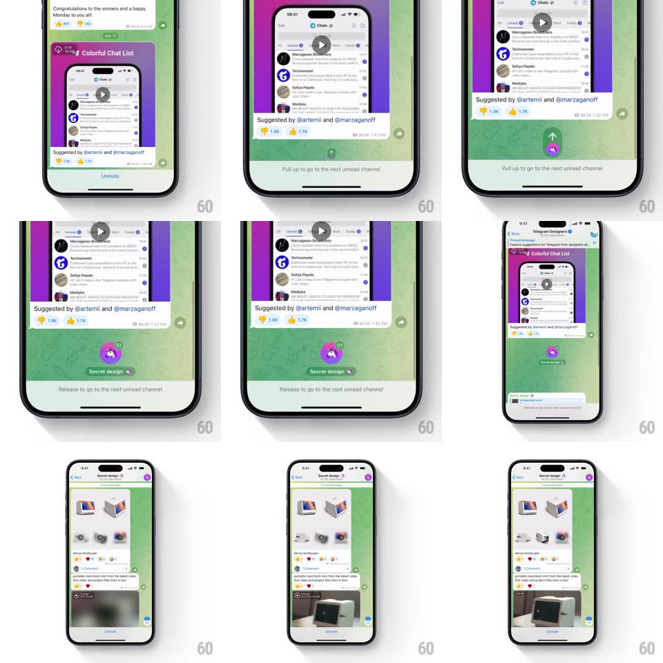

Media
Frame-by-frame

Rebuild this interaction 1:1: Telegram's pull-up-to-next-channel - at the bottom of a channel feed, pulling up stretches the feed elastically, reveals a circular arrow button and "Release to go to the next unread channel", and releasing slides the next channel's feed in from below.

Rebuild this interaction 1:1: Telegram's pull-up-to-next-channel - at the bottom of a channel feed, pulling up stretches the feed elastically, reveals a circular arrow button and "Release to go to the next unread channel", and releasing slides the next channel's feed in from below.
## Integration
Integration: stack-agnostic spec - springs given as stiffness/damping, timed motions as duration + curve; map every value to your framework and animation library of choice.
## Scene
A Telegram channel (green wallpaper, media posts, "Suggested by @artemii and @marzaganoff"). At rest, a hint bar at the bottom: "Pull up to go to the next unread channel". During pull: a green circular up-arrow button rises into view and fills; on release the next channel ("Secret design") scrolls in.
## Motion spec
Pattern: elastic over-scroll channel switch.
- Overscroll at the feed's end: content follows the finger with rubber-band resistance (x^0.5); the hint bar text swaps from "Pull up..." to "Release to go to the next unread channel" once past ~80px.
- The circular arrow button rises from below the hint bar (translate + scale 0.6 -> 1, spring ~340/20) and its ring fills clockwise with pull distance; full ring = threshold met, with a haptic tick.
- Release before threshold: everything springs back (spring ~320/24, ~300ms) and the hint resets.
- Release past threshold: the current feed slides up and off (300ms ease-in-out) while the next channel's feed slides in from below; the header crossfades to the new channel's avatar + name mid-transition.
- The hint bar hides during the switch and reappears at the new channel's end.
## Calibration
- The ring fill is the progress truth - text swap and haptic key off the same threshold.
- The next channel slides in already scrolled to its bottom-most unread region, not its top.
## Reduced motion
Pull shows the arrow without elastic stretch; release crossfades channels.
## Don't miss
- The gesture works from the feed's natural end - no separate button needed, the overscroll IS the control.
- The arrow button's green matches Telegram's accent; the ring fill is white.